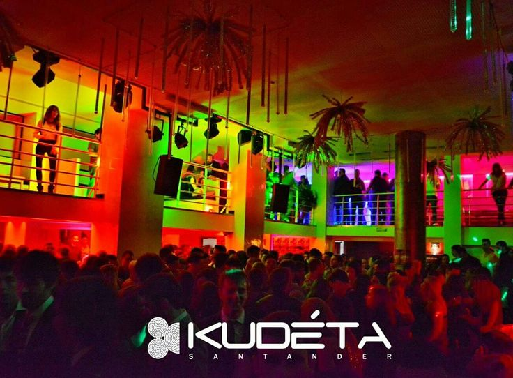
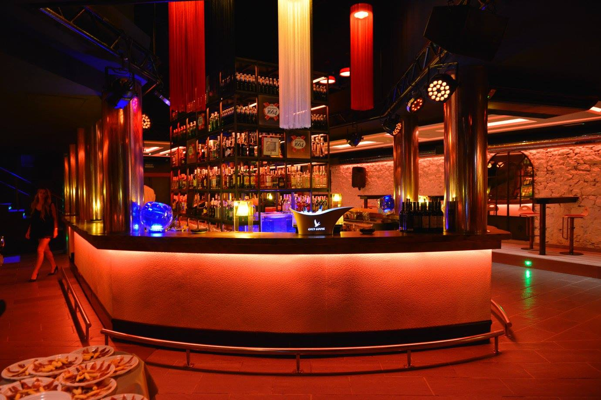
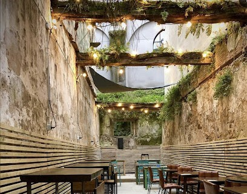

| Name |
Description |
Location |
Photo |
| Kudeta |
A reference discotheque in Santander, with well-chosen facilities, music, atmosphere and staff. |
|
 |
| Coppola |
Coppola is a pub located in one of the most exclusive places in the city of Santander, with the best premium atmosphere of the Santander nightlife. |
|
 |
| Summum |
The best current music in the heart of Santander. 300 m² of dance floor, 8.000W of unique sound, video-mapping, RGB laser, CO2 jets (megatron) and much more. |
|
|
| Spirit |
A great place to have a drink. They have their own brand of gin and apart from being cheap, it's in one of Santander's trendiest areas. |
|
 |